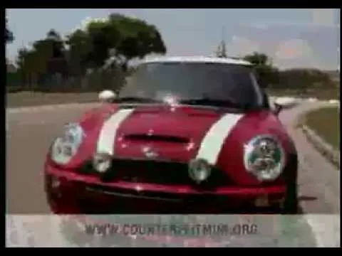

MINI / Consumer brands
MINI
A small car with an outsized idea.
Client / Platform
MINI
Focus
Digital campaigns
Scope
Brand storytelling / Automotive
Digital campaign management for MINI, including the Titanium Lion-winning Counterfeit MINI Cooper campaign.
The challenge
Bring MINI’s distinctive personality into digital campaigns that gave audiences a reason to engage.
The approach
Help bring the brand’s unconventional storytelling into digital, including the Counterfeit MINI Cooper campaign.
My contribution
I managed MINI Cooper’s digital marketing campaigns in 2004–2005, including Counterfeit MINI Cooper.
Recognition
The Counterfeit MINI Cooper campaign won a Titanium Lion at Cannes.
The campaign in action
The work.

Play film / 01Keep exploring / Related work
Volkswagen
The next conversation